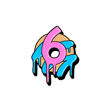

I'm currently a 3rd year student at the Lassonde School of Engineering, a part of York University, working towards an Hons. Bsc in Computer Science.
Below you'll find my relevant coursework. You can click on any of the courses below to bring up a brief summary of what I learned in the course, and
find any work I'm able to share.
The courses below were supplemented with courses in applied mathmatics, Arabic, Philosophy, Chemistry,
and one-off courses in geography and environmental science.
Relevant Coursework
Select any of the courses to the left to see a brief description, as well as any relevant coursework.
Experience
While I've not the most robust experience in the field, I do have some experience to share. See below:
Kindred AI - Now a part of Ocado Intelligent Automation : Oct 2019 - Jan 2020 (4 mo)
Remotely piloted AI-powered sorting robots deployed in fulfilment centers
Performed light machining and assembly for new prototypes
Performed general office work, which varied day-to-day
6ixDonutz : July 2022 - May 2023 (10 mo) 
Served customized orders at this boutique and busy donut shoppe
Provided excellent customer service, leading to the shop's 5-star review on Google with 500+ reviews
^Fell to 4.9 stars after I left - strongly correlated with my leaving, we should assume
Trained 2 new employees
Loblaws Groceries : August 2020 - August 2021 (1 yr)
Received, stocked, cut, cleaned, and sold dozens of types of seafood
Explained sustainable and certified (MSC, ASC) options to customers
Created attractive displays that were well-appreciated by customers
Trained 3 new employees in all of the above
Me on my own time
Below you can get a glimpse of what I'm up to outside of acedemia and formal employment. The skills here aren't likely to be relevant to positions
in my field, but they're worth mentioning for the cases wherein my personal and professional interests intersect.
I'm very interested in game development, and work on this in my spare time. This has some CS-related implications, listed below:
Proficiency with C#
Comfortable with game engines, particularly Unity and Unreal
General industry knowledge
I'm passionate about theoretical computer science, and am debating pusuing graduate studies to further study this in a more formal capacity.
I'm interested in computer hardware at the circuit level, this isn't a huge passion of mine - I'm not looking to work in hardware - but I'd like
to understand my work on a deeper level.
I love learning languages, and studying cultures in general. I've studied, or study, the following:
French - 10 years formal study, today I use French jokingly with friends or when talking to myself. It's on the back-burner for now.
Arabic - 2 years formal study in MSA, with some infusion of colloquial Gulf Arabic. I actively study Arabic on my own time.
Russian - On and off informal study, I've paused to direct my focus to Arabic but hope to pick this up again in the future.
I'm quite passionate about geology. Having never outgrown my rock collection, it's evolved into a love of mineralogy, gemology, and anything relating to gemstones.
Contact Me
Toronto | 647-222-3551 | Landon.k.navarre@gmail.com | LinkedIn: LinkedIn